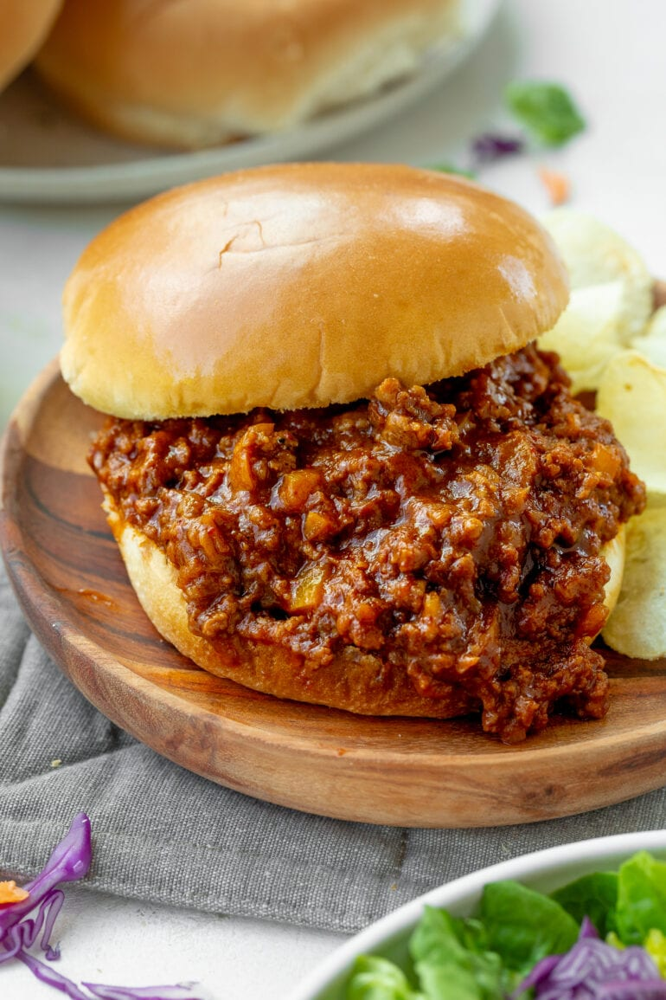

Sloppy Joes

A sandwich consisting of ground beef and onions in a tomato-based sauce served on a hamburger bun.
These crowd-pleasing Sloppy Joe sandwiches will take you back to your childhood! This is my mom's recipe and it always gets compliments!
Ingredients
- Ground beef
- Buns
- Onion
- Garlic
- Green pepper
Steps
- Cook the beef, onion, and green pepper.
- Drain the liquids, then stir in the remaining ingredients.
- Simmer for about 30 minutes. Serve on hamburger buns.